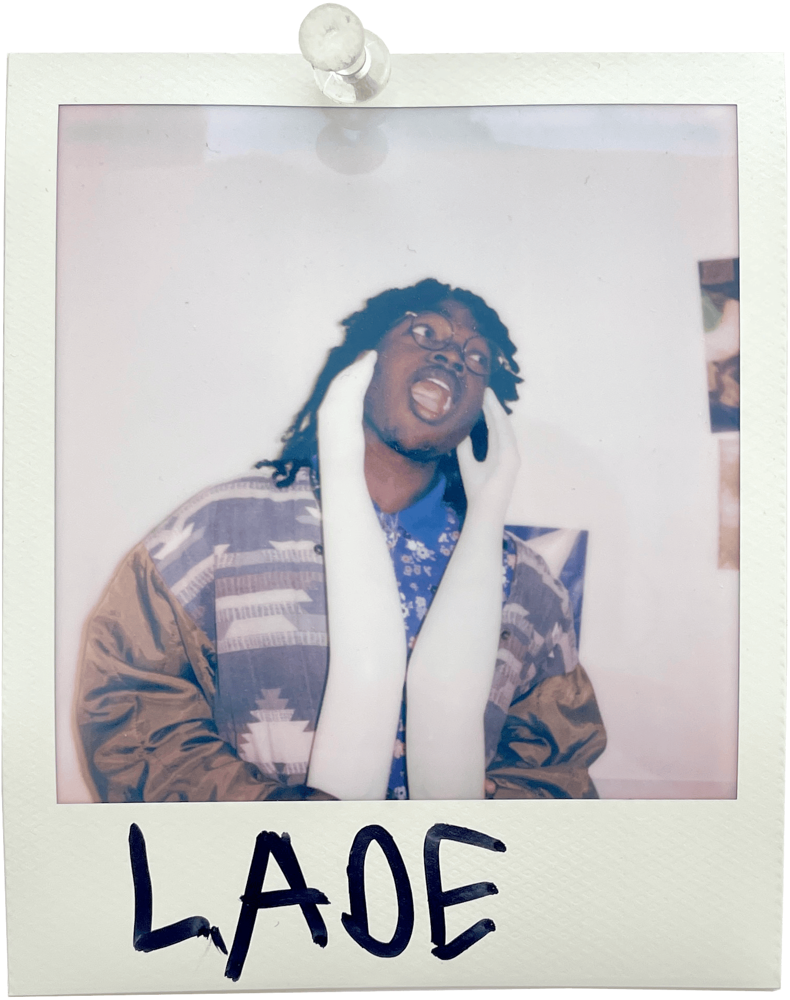

Lade Tinubu

When I think of elementary school, I think of my palms sweating during spelling tests. If I were white, I would have been redder than a tomato. For many, these school tests were an annoying part of daily life or a fun way to show off your skills. For me, my whole week revolved around that test. I spent hours repeatedly writing the exact 10 words each week, and I still could not remember how to spell them. Teachers often would tell me I'm not putting in enough effort. "He is a smart child, but he just doesn't try enough." This led me to understand that my 200 percent were other people's 50 percent. It wouldn't be until I was 18 that I was diagnosed with any learning disabilities. Being bad at writing is funny; as so many fields are dominated by it. We live in a world that accepts that intelligence comes in so many fields, but if people can't understand you there is only so much they can do.
This is where I found joy in the art community; suddenly, I wasn't held to a standard that I could not meet. I could explain myself in ways that made sense; there (almost) were enough ways to capture my feelings. Suddenly, rather than describing the pictures in my head, I can show them. I've always been passionate about creating videos, and for as long as I can remember, My practice gradually and slowly evolved from playing around with Windows Movie Maker to slowly picking up a camera and learning different filming techniques. Being inspired by the life in the world around me, I slowly began to find my own artistic voice through daily life. When I couldn't explain how much life I felt I lost after experiencing grief, I made "last spring". "Joan of Arc" came from a time when it felt like the world was ending and I had no path forward wondering what the purpose was. My art is a medium that allows me to express my innermost thoughts, emotions, and experiences in a way that words often cannot capture. Focusing on the colors of these moments, the parts that don't conform to reality, or the surreal elements that often break the fourth wall, inviting viewers to step into the artwork and experience it for themselves as I did in that moment. While admittedly my art work can deal with surface level topics I hope the depth comes from how they are displayed and presented to the world. Being known as a maximalist in all aspects of life, my art is no different making every second, or inch count. The joy of creating art is often in the chaos of learning a new skill. My art shifts radically through film Finding footage/Materials, creating everything from scratch, and anything in between. Taking the phrase jack of all trades to heart and constantly scouring for new jacks. Making sure to keep the process of art-making fun/insightful for me. Embarrassing the limitations of each medium; Whether that be showcasing the limited perspective film can give or when 3D printing showing the errors in revealing the unsettling nature of the mistakes of the material. Rather than focus on making things lifelike I love to see what possible to create and best showcase my ideas. At its core, my artistic practice is a deeply selfish journey. In so many other aspects of my life, I'm focusing on improving and getting better. My art just is, and I enjoy taking the sporadic, slow route of self-discovery in my artistic self.